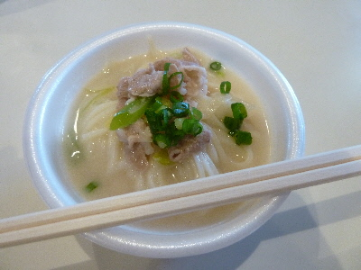
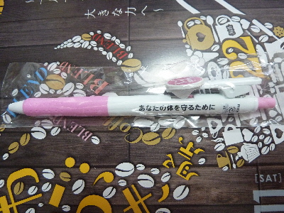
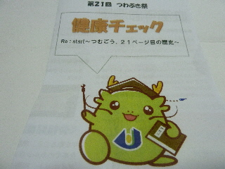
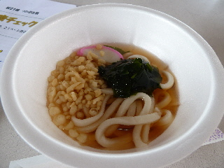
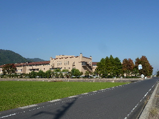
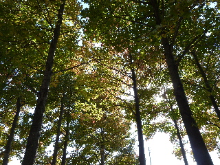
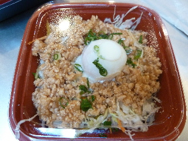

島根県立大学出雲キャンパスのつわぶき祭でご飯を食べました。
2016/06/12
お昼ご飯を食べに学園祭に行きました。

しょうがと豚肉味が効いたそうめんが美味しかったです。
他にもヤキソバやケーキもいただきました。

アンケートに答えたらボールペンをもらいました。大事に使おうと思います。
今年も学園祭で健康チェックをしました。
でも、結果は毎年変わらないなー。
悪い所を改善したいんですが、なかなかうまくいかないです。
2016/06/12
お昼ご飯を食べに学園祭に行きました。

しょうがと豚肉味が効いたそうめんが美味しかったです。
他にもヤキソバやケーキもいただきました。

アンケートに答えたらボールペンをもらいました。大事に使おうと思います。
今年も学園祭で健康チェックをしました。
でも、結果は毎年変わらないなー。
悪い所を改善したいんですが、なかなかうまくいかないです。
2015/06/14
島根県立大学出雲キャンパス看護学部看護学科の文化祭「つわぶき祭」に行きました。

つばぶき祭といえば健康チェックです。
血管年齢、骨密度、体組成、血圧を調べてもらいました。
前にも受けたことあるんですが、前とあんまり変わっていなかったです。
悪い数字は改善するように、何か努力しないといけなさそうです。

冷やしうどんを食べました。
150円でお安かったです。
お祭りやイベントで冷やしうどんって食べやすくていいですね。
他のイベントとかでもあるといいな。
2012/10/21
出雲市の看護短大の学園祭に行きました。
今日はすぐそばの北山健康温泉でもイベントをしていたので、そこから歩いていきました。
めちゃくちゃ天気が良かったので、暑かったです。

緑が多くて爽やかな学校ですね。

看護短大なので、学園祭では健康チェックが出来ました。
血管年齢とか、骨密度、体脂肪、体組織、骨密度、血圧、視力などから、好きなものを測ってもらいました。
検査の説明も聞けるし、それをもとに健康相談も受けれました。
いいサービスですね。
健康診断でやらない事もあるし、無料で気軽に測れて良かったです。

お弁当を買ってのんびり食べて帰りました。
お弁当がとっても安くて良かったです。
来年も健康チェックに行きたいです。
近くの温泉
北山健康温泉